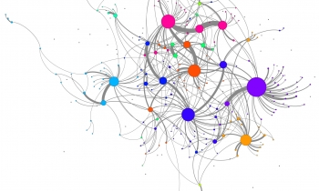

Related Links:
Tradition and Innovation in Scientists' Research Strategies
October 4th, 2016 in
Insititute: Student, University of Chicago
Department: University of Chicago
Economics is a field where theories are easy to create, and very difficult to test. It’s impractical, if not impossible, to run a controlled experiment on a scale large enough to measure the true effect of policy on economies. Looking at historical data has problems as well, as economic statistics are often too coarse or unreliable to model or investigate macroeconomic theories. But a new paper from Computation Institute researchers presents an extraterrestrial solution -- using satellite images of Earth to measure economic activity on a global scale, and even provide early warnings about economic and humanitarian crises.
The method, dubbed “the Celestial Observatory” in a new paper by authors Eamon Duede and Victor Zhorin, capitalizes upon the correlation between the amount of light and economic activity in a particular region. Economists have previously used satellite images to test how well “light spillage” at night predicts economic indicators such as gross domestic product of countries and regions. Duede and Zhorin took this method to the next step, using it as a rich dataset for testing the veracity of an enduring economic theory.
